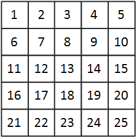
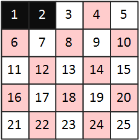
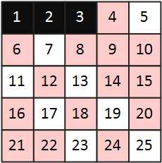
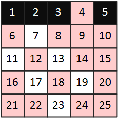
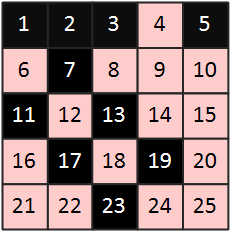

* 개인적인 공부 내용을 기록하는 용도로 작성한 글 이기에 잘못된 내용을 포함하고 있을 수 있습니다.
_contents
#1 소수 구하기
#2 에라토스테네스의 채
_ref
https://www.youtube.com/watch?v=5ypkoEgFdH8
#1 소수 구하기
소수(PrimeNumber)란 1과 자신만을 약수로 가지고 있는 자연수를 의미한다. 프로그래밍으로 소수를 구하는 다양한 방식의 알고리즘이 존재하는데, 어떤 알고리즘을 선택하느냐에 따라 시간복잡도가 달라진다.
첫 번째로 소개할 소수 판별 알고리즘 코드는 다음과 같다.
// isPrimeNumber 시간복잡도 : O(N)
// 2 ~ x - 1 의 수 중에서 하나라도 약수가 존재하면 소수가 아니다.
bool isPrimeNumber(int x){
for(int i = 2; i < x; i++)
if(x % i == 0) return false;
return true;
}
1과 자신을 제외한 수 (즉, 2 ~ x - 1) 를 반복문을 돌려 자기 자신과 나누어 나머지가 존재하는 지 판별하는 브루트포스 방식 알고리즘이다.
구현이 간단하다는 장점이 있지만 시간복잡도가 O(N)으로 효율이 떨어지는 알고리즘이다.
#include <iostream>
using namespace std;
bool isPrimeNumber(int x){
for(int i = 2; i < x; i++)
if(x % i == 0) return false;
return true;
}
int main(){
cout << isPrimeNumber(7) << '\n'; // true
cout << isPrimeNumber(10) << '\n'; // false;
return 0;
}[결과]
1
0
다음으로 소개할 소수 판별 알고리즘은 시간복잡도가 O(N^(1/2))로 앞서 소개한 알고리즘보다 다소 효율적인 알고리즘이다. 소수 판별 시 약수들이 대칭을 이루고 있다는 성질을 이용한 알고리즘이다.
8을 예로 들어보면 8의 약수는 1, 2, 4, 8이다. 여기서 1과 8(자신)을 제외하면 남은 약수는 2와 4이다.
이 때 2와 4는 2 * 4 = 8로 대칭 관계이기 때문에 굳이 4를 판별하지 않고 2까지만 탐색하여도 8이 소수가 아님을 확인할 수 있다.
따라서 n - 1 까지 모두 탐색하는 것이 아닌 n의 제곱근 까지만 for문으로 탐색을 진행하여 약수가 존재하는 지 확인하면 된다.
* <math.h>의 sqrt 함수를 이용해 제곱근을 계산하였다.
#include <iostream>
#include <math.h> // sqrt
using namespace std;
// isPrimeNumber2 시간복잡도 : O(N^((1/2)))
// 소수를 판별할 때 약수들이 대칭을 이루고 있다는 점을 이용한 알고리즘
bool isPrimeNumber2(int x){
int end = (int) sqrt(x);
for(int i = 2; i <= end; i++)
if(x % i == 0) return false;
return true;
}
int main(){
cout << isPrimeNumber2(7) << '\n'; // true
cout << isPrimeNumber2(10) << '\n'; // false;
return 0;
}#2 에라토스테네스의 채
에라토스테네스의 채는 대량의 소수를 한꺼번에 판별할 때 사용되는 알고리즘이다.
가장 먼저 소수를 판별할 범위를 배열에 저장한 뒤, 범위 내에서 소수가 아닌 자연수를 제거해 나가는 방식이다.
1 ~ 25 범위의 자연수를 에라토스테네스의 채를 이용해 소수를 판별해 보도록 하자.
1> 2차원 배열을 생성하여 소수를 판별할 범위(1 ~25)의 수를 초기화한다.

2> 1은 탐색 범위에서 제외하고 2의 배수를 배열에서 제거한다. 이 때 2는 제거하는 자연수에 포함시키지 않는다.

3> 다음으로 3의 배수를 모두 제거한다. 마찬가지로 3은 포함시키지 않으며 제거하는 자연수가 겹치면 continue한다.

4> 4는 배열에서 삭제되었으니 건너뛰고, 5의 배수를 삭제한다.

5> 다음 과정을 25(마지막 수)까지 반복하면 소수만이 배열에 남게된다.

int sieve[26];
void eratos(int number){
for(int i = 2; i <= number; ++i){
sieve[i] = i;
}
for(int i = 2; i <= number; ++i){
if(sieve[i] == 0) continue; // 이미 지워진 숫자는 continue
// i의 배수에 해당하는 숫자들을 삭제
for(int j = i + i; j <= number; j += i){
sieve[j] = 0;
}
}
for(int i = 2; i <= number; ++i){
if(sieve[i] != 0) cout << sieve[i] << " ";
}
}
int main(){
// eratos
eratos(25);
return 0;
}[결과] 2 3 5 7 11 13 17 19 23
에라토스테네스의 채는 시간복잡도가 O(NloglogN)으로 거의 선형시간에 작동할 정도로 효율적인 알고리즘 이지만, 메모리를 많이 잡아먹는다는 단점이 있다.
PS에서 대량의 소수를 구해야 하는 상황에서 메모리 제한이 충분하다면 에라토스테네스의 채를 이용하도록 하자.